cylinder
nabój CO₂ z szybkim
złączem, różowy
Zmień swoją wodę w gazowaną
już w kilka sekund!
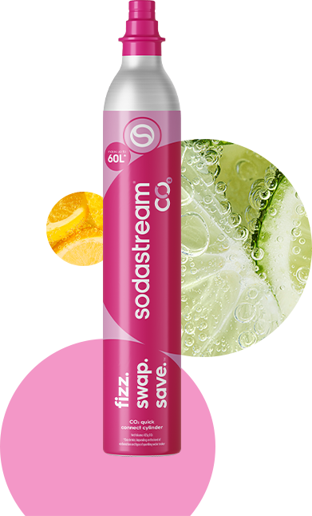
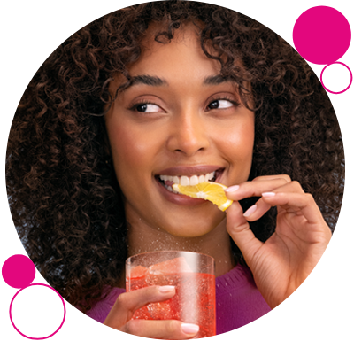
aż 60l
orzeźwienia
Różowy cylinder z gazem CO₂ Sodastream pozwala, w łatwy sposób, stworzyć nawet 60l wody gazowanej*. To równowartość aż 120 pólitrowych butelek jednorazowego użytku. To oszczędność dla Ciebie i dla Planety!
*W zależności od stopnia nagazowania i rodzaju saturatora.
gdy skończy Ci się gaz w naboju CO2 — wymień
pusty nabój na pełny i wróć do bąbelkowania!
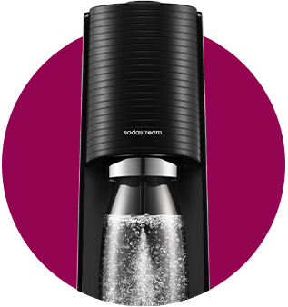
gazuj
Ciesz się pysznymi
bąbelkami —
tak jak lubisz.
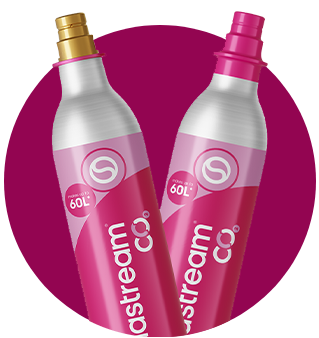
wymień
Nie wyrzucaj pustego cylindra CO₂. Wymień go na pełny i zapłać wyłącznie za gaz.
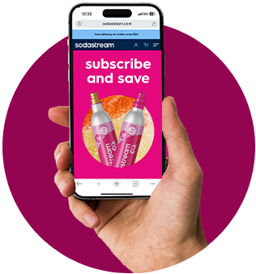
zyskaj
Oszczędzaj pieniądze i wspieraj zmianę na lepsze!
wymień pusty nabój na pełny za 29,99 zł*
lub kup zapasowy i ciesz się bąbelkami bez przerwy!
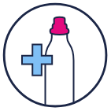
Kupując saturator
Sodastream
otrzymasz nabój
CO₂ w zestawie.
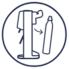
Gdy w naboju
skończy się gaz, wymontuj go zgodnie z instrukcją.
Wymień pusty
nabój CO₂ na pełny
lub kup zapasowy —
online albo w jednym
ze sklepów partnerskich.
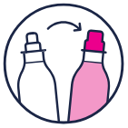
Dokończ zakup, zamontuj nabój CO₂ w saturatorze i wróć do bąbelkowania!
*Rekomendowana cena odsprzedaży.
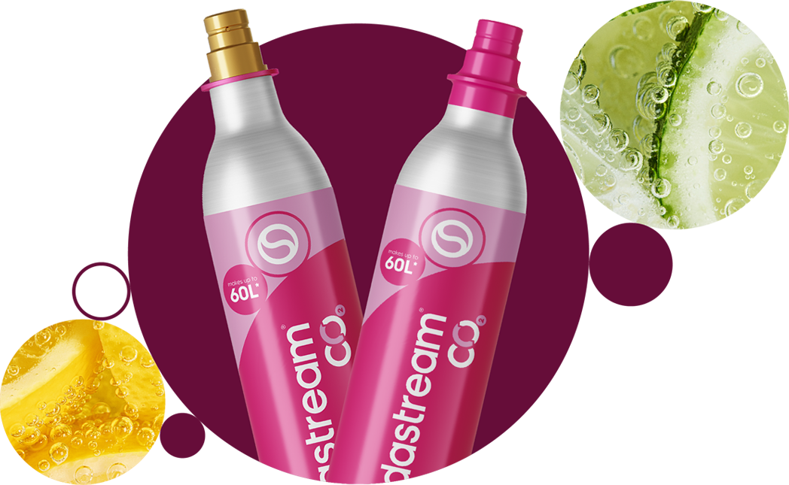
jak wymienić nabój CO₂?
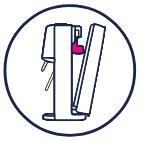
Umieść ekspres do gazowania wody Sodastream pionowo na płaskiej, stabilnej powierzchni. Zdejmij tylną obudowę.
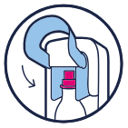
Włóż różowy nabój CO₂, rozpoczynając instalację od umieszczenia dolnej części cylindra w miejscu montażu. Następnie opuść dźwignię.
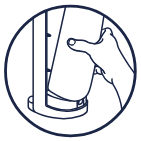
Załóż tylną obudowę na ekspres, aż usłyszysz kliknięcie. Gotowe!
nabój zamontowany?
zabąbelkuj!
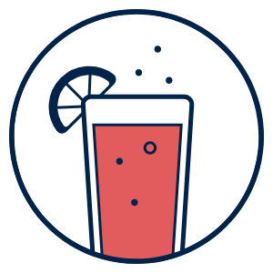
1-2 naciśnięcia
woda lekko
gazowana
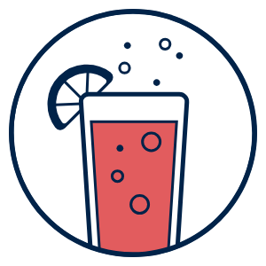
3-4 naciśnięcia
woda średnio
gazowana
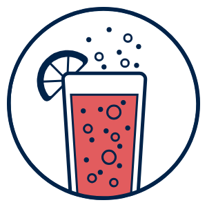
5-6 naciśnięć
woda mocno
gazowana
przyłącz się
do bąbelkowej rewolucji
Znajdź butelkę idealnie
dopasowaną
do Twoich potrzeb!
Dokup dodatkową butelkę dopasowaną do Twoich potrzeb. Miej ją zawsze przy sobie — w pracy, na siłowni czy na spacerze. Butelki nie zawierają BPA i są przystosowane do mycia w zmywarce, dlatego bez wysiłku przygotujesz je na kolejne chwile pełne orzeźwiających bąbelków!
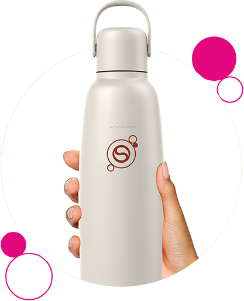
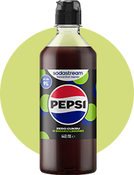
smakowe legendy
Czekają na Ciebie takie syropy jak Pepsi, 7 UP, Lipton Ice
Tea
Peach i Mirinda, z którymi stworzysz własne wersje
ulubionych napojów
gazowanych.
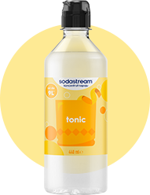
ponadczasowa klasyka
Dzięki znanym i lubianym klasykom, takim jak Cola, Tonic, Cytryna Limonka i Xtreme Energy, stworzysz orzeźwiające napoje gazowane na co dzień i wyjątkowe okazje.
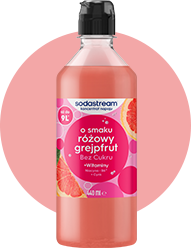
owocowe orzeźwienie
Rozsmakuj się w owocowych propozycjach od Sodastream. Masz do wyboru syropy bez dodatku cukru o smaku Malinowym, Pomarańczy Mango, Marakui oraz Owoców Leśnych, z którymi wykreujesz orzeźwiające lemoniady.
#drinkbetter